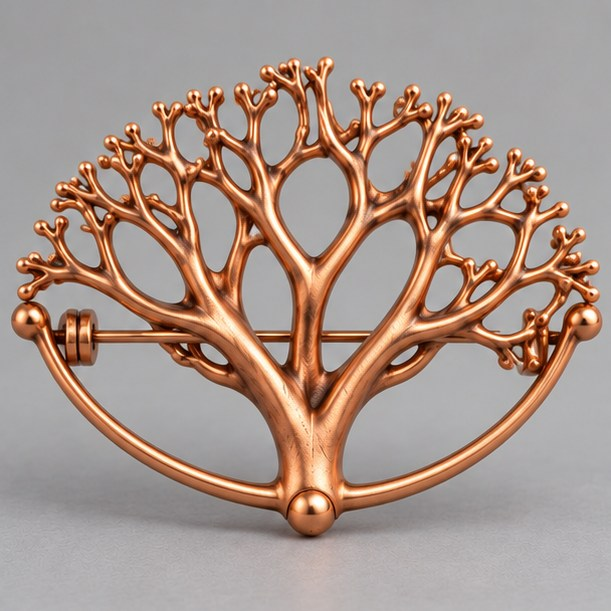

空间殖民
正在生长01 / Growth laboratory
在预设树冠空间放置吸引点，枝梢汇总附近点的方向后延伸，接近的点随之移除。点分布、作用距离和移除阈值会改变分枝结构。
迭代 0结构单元 1剩余点 0随机种子 73
Parameters
调节生长条件
拖动滑块即以同一随机种子重算，可直接比较形态变化。
吸引点密度
感应范围
消除距离
播放速度
研究依据与演示说明
方法依据：查看对应研究
交互图为教育性机制转译。导出图片不含可打印三维网格。
02 / Metal concept
机制的立体转译
生长实验展示可交互规则；此处展示由对应机制启发、经 AI 优化的完整首饰概念图。拖动视角条可在三张相邻角度图之间切换。

03 / Research index
十种生长机制
每个条目左侧是固定种子的运算预览，右侧是同一机制启发的三维金属概念。点击条目可同步查看上方生长面板与作品；研究来源集中列于下方。
04 / Sources & provenance
文献与图像来源
先列十篇核心论文及各自对应算法的意义，再列延伸研究、案例和图像来源；外部研究均可打开原始链接。
机制缩略图来自本页的简化运算；首饰图为受算法启发的 AI 概念渲染。除用户提供的前期九宫格外，未复制论文插图或 Nervous System 的作品照片。